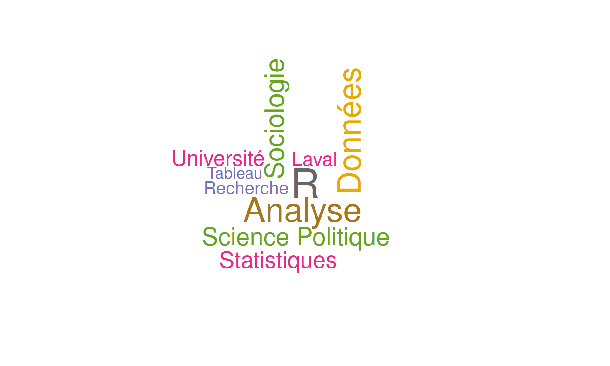

Initiation à l’analyse des données avec R
Formation théorique | 9h à 12h
22 septembre 2025
Objectifs de l’atelier
- Introduire R pour l’analyse de données
- Interface RStudio et console
- Les objets et types de données
- Les fonctions et packages
- Import et manipulation de données
- Analyse descriptive et graphiques
Le but est que vous puissiez sortir d’ici avec une compréhension de base de R et que vous soyez capable d’aller chercher des ressources pour continuer à apprendre.
Qu’est-ce que R ?
R c’est : - Un langage de programmation statistique - Gratuit et open-source
- Une communauté active mondiale - Des milliers de packages spécialisés
Pourquoi R ? - Reproductibilité des analyses - Très utilisé en sciences sociales - Extensible avec les packages - Permet l’automatisation
Aujourd’hui nous allons apprendre les bases pour analyser de vraies données !
Avant de commencer : RStudio
Ouvrons RStudio ensemble !
Les 4 panneaux de RStudio :
- Console (en bas à gauche) : où s’exécutent les commandes
- Script (en haut à gauche) : où on écrit notre code
- Environment (en haut à droite) : nos objets
- Files/Plots (en bas à droite) : fichiers et graphiques
R comme calculatrice
À tester dans la console
Créer nos premiers objets
En R, on sauvegarde tout dans des objets avec <-
Note
Important : Les objets apparaissent dans le panneau Environment !
Les vecteurs : groupes de valeurs
Types de données
[1] "numeric"[1] "character"[1] "logical"Notre premier tableau de données
Un data frame = tableau avec lignes et colonnes
Explorer un data frame
[1] 5 4[1] 5[1] 4[1] "nom" "age" "note" "programme" nom age note programme
1 Alice 23 85 Socio
2 Bob 25 78 Éco
3 Claire 22 92 Socio'data.frame': 5 obs. of 4 variables:
$ nom : chr "Alice" "Bob" "Claire" "David" ...
$ age : num 23 25 22 24 26
$ note : num 85 78 92 88 90
$ programme: chr "Socio" "Éco" "Socio" "Psycho" ...Accéder aux colonnes
Avec le symbole $ (recommandé) :
[1] "Alice" "Bob" "Claire" "David" "Emma" [1] 85 78 92 88 90[1] 24Les fonctions : nos outils
Une fonction fait une tâche : fonction(argument1, argument2)
[1] 86.6[1] 88[1] 5.458938[1] 78[1] 92Les packages : étendre R
Installation vs Chargement
install.packages("nom"): installer (1 seule fois)library(nom): charger (à chaque session)
Charger de vraies données
Utilisons les données Titanic pour pratiquer !
# Charger les données Titanic (intégrées dans R)
titanic <- read.csv("https://web.stanford.edu/class/archive/cs/cs109/cs109.1166/stuff/titanic.csv")
# Premiers coups d'œil
head(titanic, 3) Survived Pclass Name Sex Age
1 0 3 Mr. Owen Harris Braund male 22
2 1 1 Mrs. John Bradley (Florence Briggs Thayer) Cumings female 38
3 1 3 Miss. Laina Heikkinen female 26
Siblings.Spouses.Aboard Parents.Children.Aboard Fare
1 1 0 7.2500
2 1 0 71.2833
3 0 0 7.9250Explorer les données Titanic
[1] 887 8[1] "Survived" "Pclass"
[3] "Name" "Sex"
[5] "Age" "Siblings.Spouses.Aboard"
[7] "Parents.Children.Aboard" "Fare" Survived Pclass Name Sex
Min. :0.0000 Min. :1.000 Length:887 Length:887
1st Qu.:0.0000 1st Qu.:2.000 Class :character Class :character
Median :0.0000 Median :3.000 Mode :character Mode :character
Mean :0.3856 Mean :2.306
3rd Qu.:1.0000 3rd Qu.:3.000
Max. :1.0000 Max. :3.000
Age Siblings.Spouses.Aboard Parents.Children.Aboard
Min. : 0.42 Min. :0.0000 Min. :0.0000
1st Qu.:20.25 1st Qu.:0.0000 1st Qu.:0.0000
Median :28.00 Median :0.0000 Median :0.0000
Mean :29.47 Mean :0.5254 Mean :0.3833
3rd Qu.:38.00 3rd Qu.:1.0000 3rd Qu.:0.0000
Max. :80.00 Max. :8.0000 Max. :6.0000
Fare
Min. : 0.000
1st Qu.: 7.925
Median : 14.454
Mean : 32.305
3rd Qu.: 31.137
Max. :512.329 Analyse des variables qualitatives
Analyse des variables quantitatives
[1] 29.47144[1] 28[1] 14.12191Note
na.rm = TRUE ignore les valeurs manquantes (NA)
Notre premier graphique
Anatomie d’un graphique ggplot
Décomposition : - ggplot() : initialise le graphique - aes() : définit les variables (esthétiques) - geom_bar() : type de graphique (barres) - labs() : titres et étiquettes - theme_minimal() : style du graphique
Histogramme des âges

Nuage de points : âge vs prix

Filtrer et sélectionner
Grouper et résumer
Taux de survie par sexe

Sauvegarder notre travail
# Sauvegarder un graphique
ggsave("graphique_titanic.png", width = 10, height = 6)
# Sauvegarder des données nettoyées
write.csv(titanic_simple, "titanic_nettoye.csv", row.names = FALSE)
# Sauvegarder notre analyse
resultats <- titanic %>%
group_by(Pclass, Sex) %>%
summarise(taux_survie = mean(Survived) * 100)
write.csv(resultats, "analyse_survie.csv", row.names = FALSE)Messages d’erreur : pas de panique !
Erreurs courantes :
Réflexes : 1. Lire le message d’erreur 2. Vérifier l’orthographe 3. Vérifier les parenthèses/guillemets 4. Utiliser names() pour voir les colonnes
Quelques fonctions très utiles
'data.frame': 887 obs. of 8 variables:
$ Survived : int 0 1 1 1 0 0 0 0 1 1 ...
$ Pclass : int 3 1 3 1 3 3 1 3 3 2 ...
$ Name : chr "Mr. Owen Harris Braund" "Mrs. John Bradley (Florence Briggs Thayer) Cumings" "Miss. Laina Heikkinen" "Mrs. Jacques Heath (Lily May Peel) Futrelle" ...
$ Sex : chr "male" "female" "female" "female" ...
$ Age : num 22 38 26 35 35 27 54 2 27 14 ...
$ Siblings.Spouses.Aboard: int 1 1 0 1 0 0 0 3 0 1 ...
$ Parents.Children.Aboard: int 0 0 0 0 0 0 0 1 2 0 ...
$ Fare : num 7.25 71.28 7.92 53.1 8.05 ...Rows: 887
Columns: 8
$ Survived <int> 0, 1, 1, 1, 0, 0, 0, 0, 1, 1, 1, 1, 0, 0, 0, 1…
$ Pclass <int> 3, 1, 3, 1, 3, 3, 1, 3, 3, 2, 3, 1, 3, 3, 3, 2…
$ Name <chr> "Mr. Owen Harris Braund", "Mrs. John Bradley (…
$ Sex <chr> "male", "female", "female", "female", "male", …
$ Age <dbl> 22, 38, 26, 35, 35, 27, 54, 2, 27, 14, 4, 58, …
$ Siblings.Spouses.Aboard <int> 1, 1, 0, 1, 0, 0, 0, 3, 0, 1, 1, 0, 0, 1, 0, 0…
$ Parents.Children.Aboard <int> 0, 0, 0, 0, 0, 0, 0, 1, 2, 0, 1, 0, 0, 5, 0, 0…
$ Fare <dbl> 7.2500, 71.2833, 7.9250, 53.1000, 8.0500, 8.45…Bonnes pratiques
Conseils pour bien débuter
- Organisez votre travail : utilisez des projets RStudio
- Nommez bien vos objets :
donnees_titanicplutôt quedf1 - Commentez votre code : utilisez
#pour expliquer - Testez étape par étape : vérifiez chaque ligne
- Sauvegardez souvent : scripts ET données nettoyées
Ce qu’on a appris aujourd’hui
Récapitulatif
✅ Interface RStudio et console
✅ Objets, vecteurs et data frames
✅ Types de données et fonctions
✅ Import et exploration de données
✅ Analyse descriptive (moyennes, tableaux)
✅ Premiers graphiques avec ggplot2
✅ Manipulation avec dplyr (filter, select, group_by)
Vous pouvez maintenant : - Charger des données - Les explorer et les résumer - Créer des graphiques de base - Faire des analyses descriptives simples
Ressources pour continuer
Documentation et aide : - ?fonction dans R (ex: ?mean) - R Documentation - RStudio Cheatsheets
Apprentissage : - swirl - apprendre R dans R - R for Data Science (gratuit en ligne) - ChatGPT pour déboguer vos erreurs !
Communauté : - Stack Overflow - RStudio Community
Questions ?
Merci pour votre attention !
Contact : Étienne Proulx
Tous les codes sont copiables depuis cette présentation
“Le meilleur moyen d’apprendre R, c’est de pratiquer avec de vraies données !”
Prochaines étapes : Continuez avec vos propres données et n’hésitez pas à expérimenter !